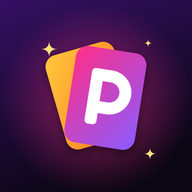

Modo Previa
El juego para la previa antes de salir de fiesta: retos, Yo nunca, verdad o reto, La Bomba y mucho más en una sola partida.
Soporte
¿Algo no funciona, tienes una idea o quieres proponer una carta? Escríbenos a modoopreviaa@gmail.com y te contestamos lo antes posible.
Preguntas frecuentes
¿Necesito internet?
No. La app funciona sin conexión.
¿Cuántos jugadores hacen falta?
Mínimo 2, pero es mejor con 3 o más. La votación secreta y «¿Quién es más probable?» necesitan al menos 3.
¿Cómo funciona la hora de salida?
En Ajustes pones a qué hora salís. El juego empieza suave, se va calentando y al llegar la hora salta la ronda final.
¿Puedo quitar tipos de carta?
Sí, en Ajustes → «Qué puede salir».
¿Mis datos?
No recogemos ninguno. Lee la política de privacidad.
Solo para mayores de 18 años. Bebe con responsabilidad.